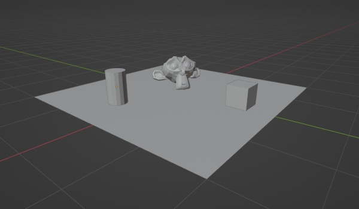
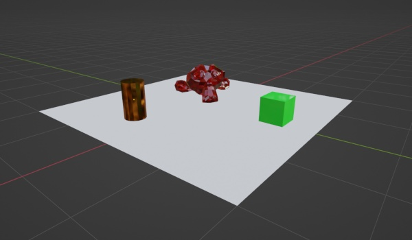
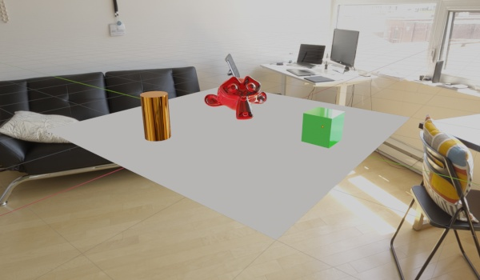
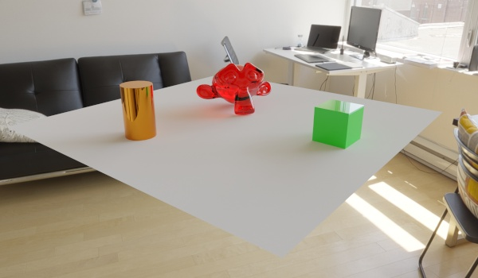

by Stephen Ziegler. Made for CS 2350.
Of all the possible hobbies to have, 3D modeling sounds like one of the more esoteric ones. It's like someone saying that they study neural proteins in their spare time, or that they decompress after a hard day of work by launching up the old particle accelerator in the garage. One reason for this might be how broad the field of 3D modeling is. In fact, referring to all 3D work on a computer as "3D modeling" is inaccurate. A more accurate thing to refer to it as would be "Using 3D Computer Graphics Technologies and Processes to Create Artistic Works," but that doesn't really roll off the tongue, so I'll stick with the former. Some of the subtypes of work in 3D computer graphics can include...
- Modeling
- Texturing/Material Creation
- Rigging
- Animation
- Rendering
- Compositing
Another reason that 3D modeling sounds like a strange thing to have as a hobby might be the prohibitive cost. Not only do you need a computer with a decent CPU and a high-caliber graphics card, but you also need a 3D computer graphics software tool set (as Wikipedia calls them), many of which are only available through subscriptions touting amounts equivalent to the aforementioned computer you need to run them. For example, the industry standard program for VFX work Maya by Autodesk costs $1,785 per year for a software license as of writing this. Additional programs to do specific tasks such as cloth simulation or material design may also be in the hundreds to thousands of dollars. But one program breaks that mold, and that program is...
Blender
Blender is a fully fleshed out "3D creation suite" (as they refer to themselves as). It hosts tools for 3D modeling, texturing, motion capture, virtual reality, and everything in between. What makes it different though is not its toolkit, but its pricing and development model. Blender is both free and open-source. You can download it right now and have access to every single feature it offers. Not only that, but the program is actually yours. What do I mean by that? Blender is licensed using the GPL . The GPL, or GNU Public License is one that guarantees four freedoms: Freedom to run, study, share, and modify. Unlike Maya where the program is only ever temporarily licensed to you and revokable at any time, Blender allows you to share copies of it freely, and modify your copy of it however you see fit. This "freedom to modify" is exercised and concentrated to push development of the program forward, essentially crowd-sourcing the software development process. This crazy, public style of development and distribution doesn't sound like it should work, but it did for Blender.
A Simple Example of Scene Creation
| Steps 1 and 2, initial setup of scene and materials. | 1. Setting up a simple scene. This one uses easily-accessible "primitive mesh" objects that come prepackaged with the software. Basic shapes like cubes, cylinders, cones, spheres, and the mascot of Blender: Suzanne, in the form of a monkey head mesh. |  | 2. Applying materials to each object in our scene. The difference between materials and textures is a little confusing. A way to put it might be that textures are an ingredient to 3D materials. Textures provide raw color and detail data while materials more define rules on how light should interact with the object. |  |
|---|---|---|---|---|
| Steps 3 and 4, smoothing out the edges and rendering. | 3. Finalizing mesh shading and choosing a background. Notice how the cylinder and our friend Suzanne appear smoothed. This is achieved using graphical tricks rather than pure mesh subdivision, as a perfectly smooth object would require an infinite amount of memory to represent. Some amount of subdivision does occur though. As for the background, it's a 360 degree photo of a real-world location. This is done to provide accurate lighting and reflection to the "fake" objects in the scene, as half the battle of 3D texturing and materials is how the objects are lit. |  | 4. A scene camera is added to tell the computer what should actually be rendered. After setting a few parameters, the process of rendering begins. You'll notice that while the previous picture shows decent reflections, no objects are casting shadows and the image looks relatively flat. That's because those images are displayed using an intermediate "material view" that Blender provides, which has rendering techniques closer to the tricks used by video game engines rather than accurate path-tracing engines. On the other hand, the rendered version uses Blender's "Cycles" path-tracing engine to simulate a fairly accurate approximation of how real-world light and its physics would interact with these objects. The result is photorealistic-looking shadows, reflections, refractions, and diffusion. |  |